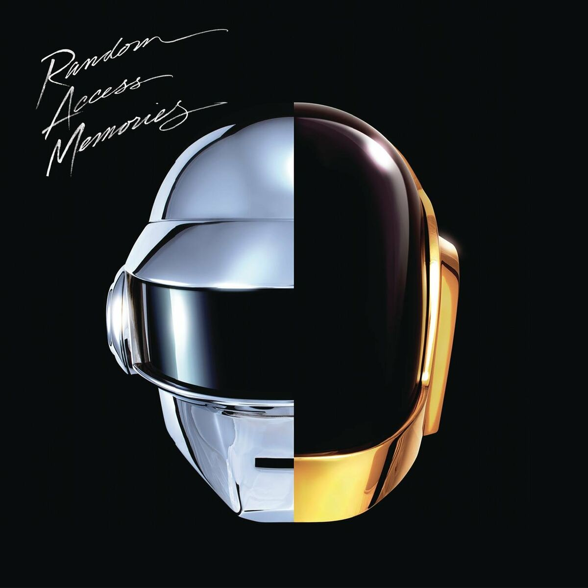

Whiplash (2014) is an electrifying thriller disguised as a music drama. With intense performances by Miles Teller and J.K. Simmons, it explores the brutal pursuit of greatness through relentless ambition and psychological warfare. Simmons' portrayal of the ruthless instructor is both terrifying and mesmerizing, making every scene pulse with tension. The film’s rapid editing and exhilarating jazz sequences build to a breathtaking climax that leaves you on edge. A must-watch for those who appreciate raw, high-stakes storytelling.
Top Album Reviews
Review: To pimp a butterfly – Kendrick Llamar
Kendrick Lamar’s To Pimp a Butterfly is a genre-defying, politically charged epic that redefined what a hip-hop album could be. Fusing elements of jazz, funk, soul, and spoken word, Lamar delivers a deeply layered exploration of Black identity, systemic oppression, self-worth, and spiritual reckoning. It's ambitious, unapologetically complex, and filled with poetic nuance.
Songs like “Alright,” “The Blacker the Berry,” and “u” don’t just tell stories—they challenge and provoke. The production, featuring Thundercat, Terrace Martin, and Flying Lotus among others, is vibrant and daring, often feeling like a live jam session. Lamar’s ability to shift between vulnerability and bravado, hope and despair, cements his place as one of the most vital voices in modern music. To Pimp a Butterfly isn’t just an album—it’s a cultural landmark, as rich in meaning as it is in musicality.
Review: What's going on – Marvin Gaye
Marvin Gaye’s What’s Going On stands as one of the most poignant and powerful albums in music history. Departing from Motown’s formulaic hits, Gaye turned inward and outward—confronting the turbulence of Vietnam, racial injustice, police brutality, and environmental decline with a deeply spiritual and humanistic perspective. Each track flows seamlessly into the next, creating a conceptual suite that feels both personal and universal. With lush orchestration, smooth grooves, and aching falsetto, Gaye delivers a message that is as relevant today as it was over 50 years ago. The title track, “Mercy Mercy Me (The Ecology),” and “Inner City Blues (Make Me Wanna Holler)” are emotionally charged yet beautifully restrained. This is not just an album—it’s a cry for peace, empathy, and awareness. What’s Going On is essential listening, not just for its sonic beauty but for its enduring soul and social urgency.
Review: Rumours – Fleetwood Mac
Fleetwood Mac’s Rumours is an iconic snapshot of personal chaos turned into musical perfection. Born out of heartbreak, betrayal, and internal band tension, the album remarkably balances raw emotion with polished pop-rock craftsmanship. Each song, from the haunting “Dreams” to the energetic “Go Your Own Way” and the reflective “The Chain,” captures a different facet of romantic dissolution and resilience.
Despite the turmoil behind the scenes, Rumours is full of soaring harmonies, pristine production, and unforgettable hooks. It became one of the best-selling albums of all time and remains timeless in its honesty and universal relatability. Beneath the surface-level sheen lies a bruised but beating heart—making Rumours as emotionally powerful as it is sonically immaculate.
Review: The Miss Eductaion of Lauryn Hill – Lauryn Hill
The Miseducation of Lauryn Hill is a rare, once-in-a-generation debut that blends hip-hop, soul, R&B, and reggae into something profoundly personal and culturally groundbreaking. Lauryn Hill’s songwriting is intimate and honest, addressing love, motherhood, faith, heartbreak, and self-worth with poetic clarity and emotional weight.
From the anthemic “Doo Wop (That Thing)” to the tender “To Zion” and the aching “Ex-Factor,” Hill showcases her dual brilliance as both a rapper and a singer. The album’s fusion of live instrumentation and sharp lyricism helped break genre barriers, earning both critical acclaim and commercial success. Winning five Grammys, Miseducation solidified Hill as an icon—despite being her only solo studio album. It remains an enduring testament to the power of authenticity, vulnerability, and Black womanhood in music.

Review: Random Access Memories – Daft Punk (2013)
With Random Access Memories, Daft Punk took a daring turn away from their electronic roots, crafting an album that pays homage to the golden age of analog recording. Released in 2013, this ambitious project blends elements of disco, funk, progressive rock, and soft soul into a lush, meticulously produced soundscape. The French duo recruited a host of collaborators—most notably Nile Rodgers, Pharrell Williams, Julian Casablancas, and Giorgio Moroder—to bring a human touch to their robotic persona.
Tracks like “Get Lucky” and “Lose Yourself to Dance” radiate with groove-heavy charm, while deeper cuts like “Giorgio by Moroder” and “Touch” showcase conceptual depth and cinematic flair. The album feels like a love letter to the past, celebrating musical craftsmanship over synthetic convenience.
While Random Access Memories divided fans who expected club-ready beats, it earned critical acclaim for its ambition, production quality, and emotional resonance. It ultimately won the Grammy for Album of the Year in 2014, cementing Daft Punk’s legacy as boundary-pushers. A decade later, it still feels like a bold, beautiful anomaly in their catalog—and a testament to the timeless power of reinvention.